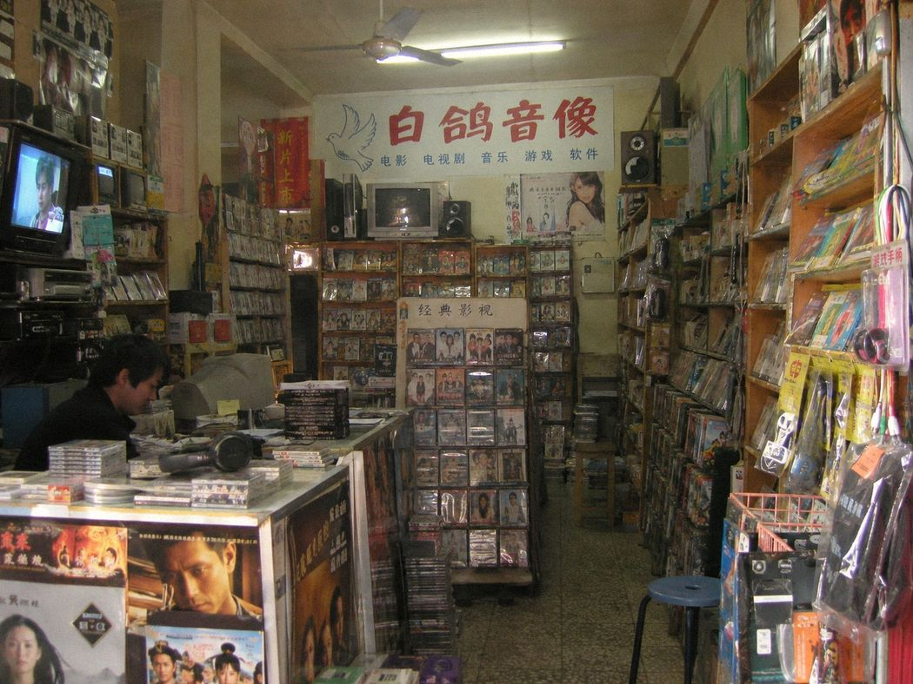

2009店内 / 位置草图来源：店内旧相册
旧相册内景一张，门面冲印照一张；拍摄方向未记。底图：外墙轮廓 / 固定窗 / 主通道。


位置标注登记
设施位置：A / B / C
| 收银台 | |
|---|---|
| 连续剧架 | |
| 侧门前展示架 |
后墙固定开口正门方向主通道
A
B
C
位置标注已保存。 人物 / 许芹
关联记录：空。
旧相册内景一张，门面冲印照一张；拍摄方向未记。底图：外墙轮廓 / 固定窗 / 主通道。

设施位置：A / B / C
| 收银台 | |
|---|---|
| 连续剧架 | |
| 侧门前展示架 |
关联记录：空。